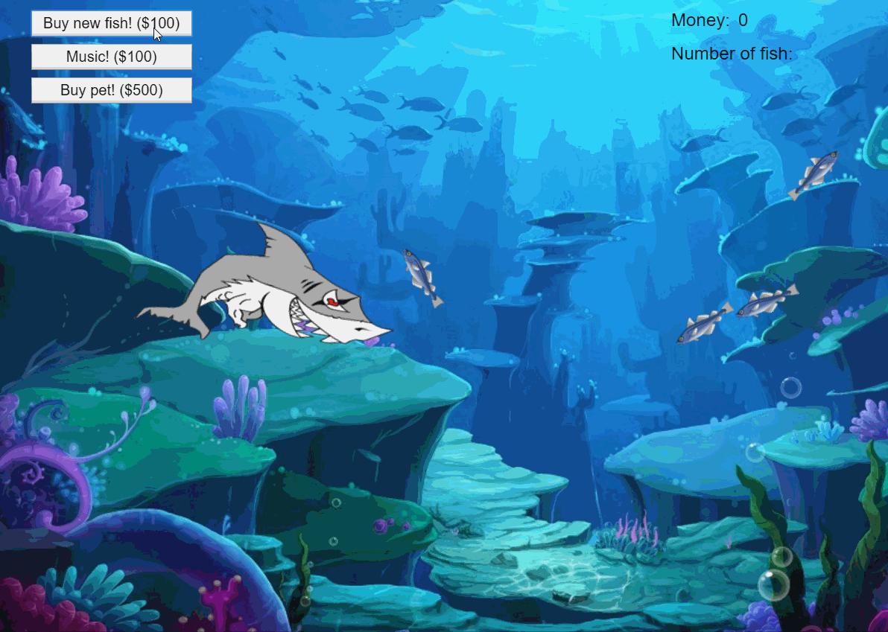
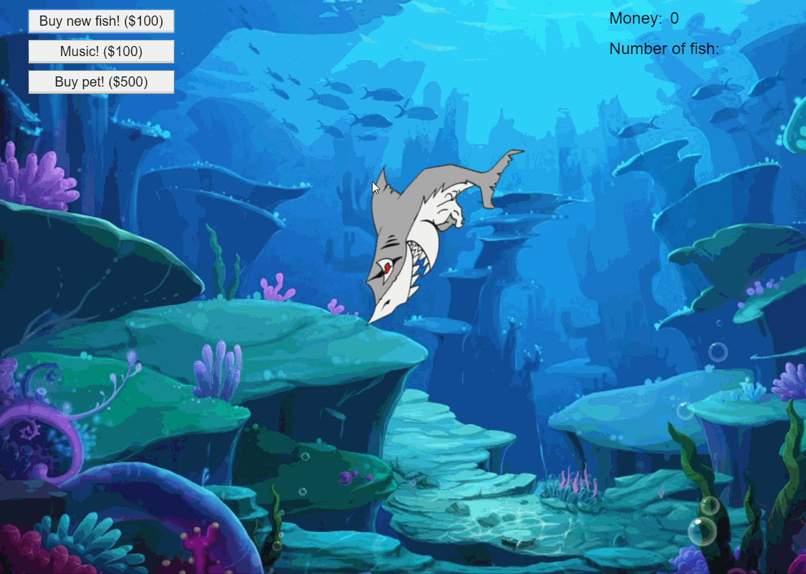
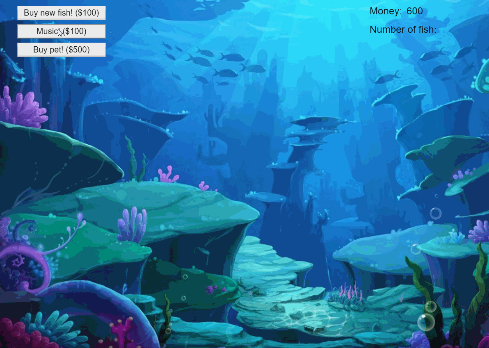
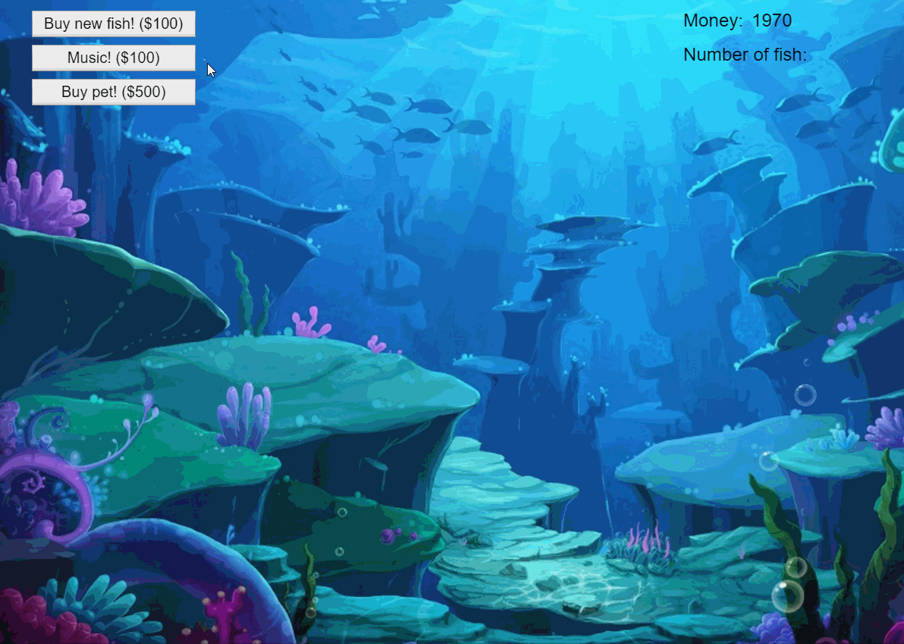

Construct 2 游戏制作 -- 神奇水族箱 (通关约需5分钟)
楔子(Setting):
水族箱里生活着赏心悦目的鱼儿，但要照看好水族箱可不是什么容易的事情。饲主不但要担心自己的宝贝鱼儿有没有吃饱，还要担心有没有外物入侵。你能当好一个水族箱的主人吗？
玩法(Gameplay):
每一关都可以解锁一种有特殊能力的宠物鱼，收集足够的金币购买宠物鱼即可过关。普通的鱼儿需要定时饲喂，也会定时产生金币。而金币则可用于购买饲料和更多的鱼儿。同时，游戏中偶然会出现试图吃掉鱼儿的鲨鱼，此时玩家必须击退鲨鱼以保护自己的家产。通过三关以后，可以进入无尽模式。
人设与道具(Game Spirites):
- 玩家(的鼠标)：用鼠标右击空白处可以花钱投喂鱼食，点击金币可以收集，点击道具购买栏可以购买，多次点击鲨鱼可以击杀鲨鱼。
- 鱼儿：需要定时饲喂，否则会饿死。分为三个成长阶段，阶段越高产金币越快。可能会被鲨鱼吃掉。
- 鲨鱼：定时产生，会试图吃掉鱼儿。需要被玩家多次点击以击杀。
- 唱片机：花费金币购买，短期内提高鱼儿的产金币能力。
- 宠物蚌：每隔一段时间产生一颗能卖钱的珍珠。
- 宠物蓝鲸：鲨鱼出现时，可以保护生长第一阶段和第二阶段的鱼儿。
- 宠物电鳗：电死所有的鱼儿，并产生大量金币。
CRC卡片
+--------------+------------------+ | Object Name | +---------------------------------+ | 鱼儿 | +--------------+------------------+ | Attributes | | +--------------+------------------+ | 饱食度 | 为0时鱼死亡 | +--------------+------------------+ | 成长阶段 | 影响产金币速率 | +--------------+------------------+ | 成长剩余时间 | 为0时成长 | +--------------+------------------+ | 生产剩余时间 | 为0时生产金币 | +--------------+------------------+ | Collaborator | Events & Actions | +--------------+------------------+ | 无 | 定时 & 转换朝向 | +--------------+------------------+ | 无 | 饥饿度为0 & 摧毁 | +--------------+------------------+ | 饲料 | 碰撞 & 增加饱食度| | | 定时 & 朝向饲料 | +--------------+------------------+ | 金币 | 定时 & 定时产生 | +--------------+------------------+ | 鲨鱼 | 碰撞 & 摧毁自己 | +--------------+------------------+ +--------------+------------------+ | Object Name | +---------------------------------+ | 饲料 | +--------------+------------------+ | Collaborator | Events & Actions | +--------------+------------------+ | 鱼儿 | 碰撞 & 摧毁自己 | +--------------+------------------+ | 无 | 定时 & 下坠 | +--------------+------------------+ | 无 | 移到界外 & 摧毁 | +--------------+------------------+ +--------------+------------------+ | Object Name | +---------------------------------+ | 鲨鱼 | +--------------+------------------+ | Attributes | | +--------------+------------------+ | 生命值 | 为0时死亡 | +--------------+------------------+ | Collaborator | Events & Actions | +--------------+------------------+ | 鱼儿 | 定时 & 朝向鱼儿 | +--------------+------------------+ +--------------+------------------+ | Object Name | +---------------------------------+ | 宠物蚌 | +--------------+------------------+ | Attributes | | +--------------+------------------+ | 生产剩余时间 | 为0时产生珍珠 | +--------------+------------------+ | Collaborator | Events & Actions | +--------------+------------------+ | 珍珠 | 定时 & 定时产生 | +--------------+------------------+ +--------------+------------------+ | Object Name | +---------------------------------+ | 宠物蓝鲸 | +--------------+------------------+ | Collaborator | Events & Actions | +--------------+------------------+ | 鱼儿 | 碰撞 & 保护鱼儿 | +--------------+------------------+ +--------------+------------------+ | Object Name | +---------------------------------+ | 宠物电鳗 | +--------------+------------------+ | Collaborator | Events & Actions | +--------------+------------------+ | 鱼儿 | 被点 & 摧毁鱼儿 | +--------------+------------------+ | 鲨鱼 | 被点 & 摧毁鲨鱼 | +--------------+------------------+ +--------------+------------------+ | Object Name | +---------------------------------+ | 宠物电鳗 | +--------------+------------------+ | Collaborator | Events & Actions | +--------------+------------------+ | 鱼儿 | 被点 & 摧毁鱼儿 | +--------------+------------------+ | 鲨鱼 | 被点 & 摧毁鲨鱼 | +--------------+------------------+
效果展示
点击按钮可以购买一只小鱼。右键点击屏幕可以喂食。
每隔一段时间，产生一只吃鱼的鲨鱼。
鼠标点击击杀鲨鱼后，鲨鱼掉落一颗钻石来弥补损失
购买宠物蚌后，每隔一段时间可以获得珍珠。为了演示效果，这里修改了时间参数。
鲸鱼可以保护鱼儿免受鲨鱼侵袭。

电鳗可以一次击杀所有鱼并获得钻石。

下图为没有音乐时的产金速率。
下图为有音乐时的产金速率。
心得体会：
效果，不甚理想。Construct2是一款封装程度很高的开发工具，带来方便的同时，也导致了一些不便。例如，不得不迁就于内部功能的实现方式来修改游戏机制；代码量过大等等。不过，Construct2中面向对象编程的思维方法让我受益良多。